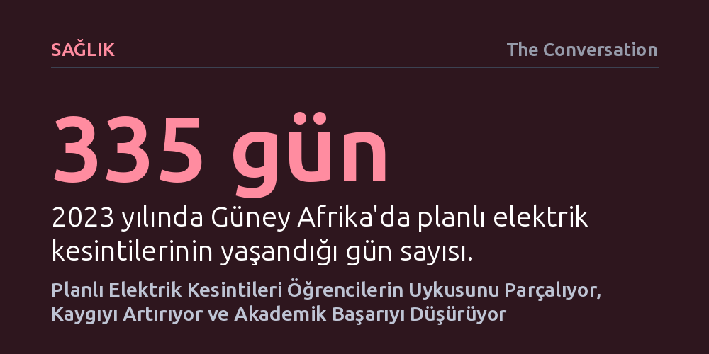

SAGLIK · The Conversation · 2026-10-23
Güney Afrika'da yapılan araştırma, planlı elektrik kesintilerinin üniversite öğrencilerinin uykusunu bölerek anksiyeteyi tırmandırdığını ve akademik başarıyı düşürdüğünü gösteriyor. Özellikle geç akşam kesintileri uykuyu parçalarken, güneş enerjisi gibi sessiz alternatifler uykuyu jeneratörlere kıyasla belirgin şekilde daha iyi koruyor.
Altyapı krizleri yalnızca ekonomik kayıplarla sınırlı kalmayıp, uykuyu parçalayarak gençlerin zihinsel sağlığını ve bilişsel potansiyelini doğrudan baltalıyor.

Güney Afrika, tarihinin en ağır enerji krizini 2023 yılında yaşadı. Ülkenin ulusal elektrik şirketi Eskom'un uyguladığı planlı elektrik kesintileri, yılın 365 gününün 335'inde hayatı durma noktasına getirdi; elektrikler çoğu zaman günde birkaç kez kesildi. Kamuoyunda ve basında bu kriz genellikle kepenk indiren işletmeler, aksayan sağlık hizmetleri ve milyarlarca dolarlık ekonomik zararlar üzerinden tartışıldı. Oysa kesintilerin doğrudan insan biyolojisi, özellikle de uyku düzeni üzerindeki yıkıcı etkileri uzun süre göz ardı edildi.
Güney Afrika Uyku ve Sağlık Derneği (SASSH) bünyesindeki araştırmacılar, bu boşluğu doldurmak amacıyla gençlerin ve üniversite öğrencilerinin durumuna odaklandı. Zaten düzensiz saatlerde uyuyan, yoğun ders yükü altında ezilen ve kronik stresle boğuşan öğrenciler, dışsal şoklara karşı en kırılgan gruptu. Bir insanın sağlıklı kalabilmesi için kesintisiz bir uyku penceresine ihtiyacı vardır; parçalanmış ve süresi kısalmış bir uyku ise diyabetten yüksek tansiyona, depresyondan bilişsel gerilemeye kadar çok geniş bir sağlık riskini beraberinde getirir. Elektrik kesintileri ise uykuyu belirleyen oda sıcaklığı, gürültü, ışık ve zihinsel dinginlik faktörlerinin tamamını aynı anda altüst etti.
Johannesburg'daki Witwatersrand Üniversitesi'nde eğitim gören 1.100'ü aşkın öğrenciyle yapılan kapsamlı araştırma, karanlığın gençlerin gecelerini nasıl kâbusa çevirdiğini somut verilerle belgeledi. Ankete katılan öğrencilerin yaklaşık dörtte üçü elektrik kesintilerinin uykularını etkilediğini, etkilenenlerin ise beşte dördü uyku kalitelerinin belirgin şekilde bozulduğunu belirtti. En yaygın şikâyet, gece boyunca sık sık uyanarak uykunun parçalanmasıydı.
Uykusuzluğun ardındaki temel tetikleyicilerden biri şiddetli anksiyete ve belirsizlikti. Öğrencilerin neredeyse yarısı; buzdolabındaki yiyeceklerin bozulması, telefon ve modemlerin şarjının bitmesi ya da internet bağlantısının kopması endişesiyle yatakta saatlerce uyanık kaldığını ifade etti. Yaklaşık üçte biri karanlıkta güvenlik zaafı yaşamaktan korkarken, benzer bir oran da vantilatör veya ısıtıcıların çalışmaması yüzünden odanın aşırı sıcak ya da aşırı soğuk olmasından yakındı. Günlük rutinlerin bozulması ve dışarıdan gelen jeneratör uğultusu, uykuya dalış süresini ciddi biçimde uzattı.
Araştırma, kesintilerin zamanlamasının da kritik olduğunu gösterdi. Öğrenciler için en yıkıcı zaman dilimi, akşam saat 20.00 ile gece yarısını yarım saat geçe (00.30) arasına denk gelen kesintiler oldu. Zira bu aralık hem akşam yemeği, temizlik ve ders çalışma rutinlerini kapsıyor hem de öğrencilerin ortalama uyku saati olan 23.00'e denk geliyordu. İlginç bir istisna olarak, kesintilerden etkilenen öğrencilerin beşte biri daha iyi uyuduğunu belirtti; bunun nedeni ise ekranların ve kablosuz internetin kapanmasıyla odalarının zifiri karanlık ve sessiz hale gelmesiydi.
Elektrik kesintilerine karşı alternatif güç kaynaklarına sahip olmak öğrencilerin uykusunu korumada belirgin bir fark yarattı. Yaş, cinsiyet ve ikamet yeri gibi değişkenler kontrol edildiğinde, alternatif bir enerji kaynağına erişebilen öğrencilerin uyku kalitesinde bozulma bildirme olasılığı yaklaşık yüzde 60 daha düşüktü. Ancak bu koruyucu kalkana herkes eşit şekilde ulaşamıyordu; katılımcıların yalnızca yüzde 40'ı bir yedek güç kaynağına sahipti. Kampüs yurtlarında kalanlar üniversitenin jeneratör filosu sayesinde daha şanslıyken, aile evlerinde veya özel kiralık yerlerde kalan öğrenciler karanlığa mahkûm oldu.
Daha da önemlisi, her yedek güç kaynağı uykuyu aynı şekilde korumuyordu. Yedek güce sahip olanlar arasında fosil yakıtlı jeneratör ya da akülü invertör kullananların yaklaşık yarısı yine de kötü uyuduğunu rapor etti. Buna karşılık, sessiz çalışan güneş enerjisi sistemlerinden yararlananlar arasında uykusunun kötüleştiğini söyleyenlerin oranı dörtte birin altındaydı. Mazotlu jeneratörlerin yaydığı yüksek gürültü ve aralıklarla devreye girip çıkması, bizzat uykuyu bölen yeni bir kirlilik kaynağına dönüştü.
Uykusuz geçen gecelerin faturası doğrudan dersliklere ve sınav kâğıtlarına yansıdı. Katılımcıların üçte ikisi elektrik kesintilerinin ders çalışma düzenlerini baltaladığını belirtirken, bu grubun yarısından fazlası notlarında düşüş yaşandığını bildirdi. Öğrencilerin yüzde 40'ından fazlası kesintiler sırasında ders çalışmayı tamamen bıraktığını, uykusu bölünen öğrencilerin ise sabah derslerine geç kalma ve düşük not alma olasılığının çok daha yüksek olduğunu ifade etti. Nörobilimsel araştırmalar, uykunun gün içinde öğrenilen bilgileri pekiştirmek ve gereksiz anıları temizleyerek zihni ertesi güne hazırlamak için hayati olduğunu zaten gösteriyor; sahadan gelen veriler bu mekanizmayı doğrular nitelikte.
Güney Afrika'da elektrik şebekesi son bir buçuk yıldır rahatlamış olsa da sistem kırılganlığını koruyor. Üstelik planlı kesintiler yalnızca bu ülkeye özgü değil; Nijerya, Gana, Zambiya ve Pakistan gibi Sahra Altı Afrika ve Güney Asya ülkelerinde günlük hayatın olağan bir parçası durumunda. Bu çalışma; üniversiteler, şehir planlamacıları ve enerji yöneticileri için somut dersler sunuyor. Özellikle geç akşam saatlerindeki kesintilerin insani maliyetinin çok yüksek olduğu, gürültülü jeneratörler yerine güneş gibi sessiz sistemlerin tercih edilmesi gerektiği ve öğrencilerin karanlığı telefon ekranıyla doldurmak yerine katı bir uyku rutini tutturmasının önemi netleşiyor. Elektrikler eninde sonunda geri gelse de uykusuz geçen gecelerin zihinde bıraktığı hasarı telafi etmek çok daha zor oluyor.